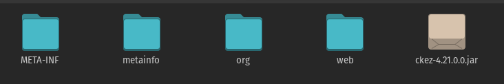
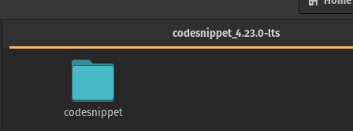
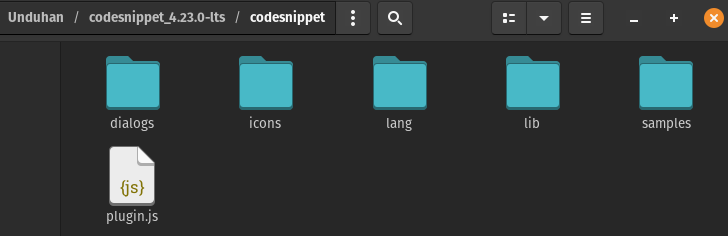
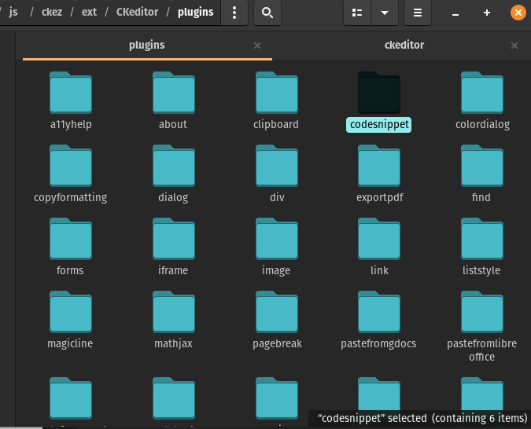
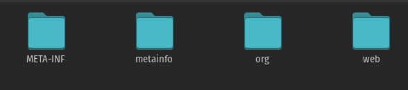
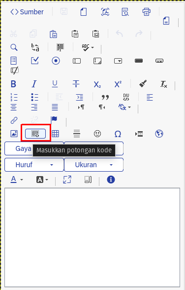
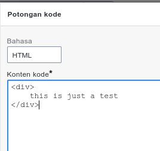
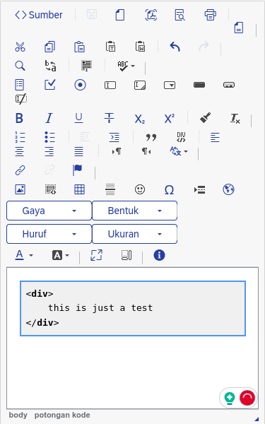

Intro
SAP Commerce's Backoffice uses ZKCKEditor(ZKCKeditor is a wrapper of CKEditor for the ZK framework) as a WYSIWYG editor. Out of the box, CKEditor supports various additional plugins other than those that are already installed.
In this blog post, I will guide you on how to install new plugins to Backoffice's WYSIWYG editor, I will guide you using the SAP Commerce 2205.18 version (with ZKCKeditor 4.21.0.0). If you use a different SAP Commerce version, the ZKCKEditor version might be different, but the overall steps should be the same.
Also, I will be using the Code Snippet plugin by CKSource as the example plugin that I will install in this blog post. If you have your own plugins, the overall steps should be the same.
Prerequisites:
You need basic knowledge of SAP Commerce and its extensions.
The Steps
- Find out the ZKCKEditor's jar file (it's named ckez-xyz.jar, xyz is the version). For SAP Commerce 2205, it should be on bin/modules/backoffice-framework/backoffice/web/webroot/WEB-INF/lib/
- Copy the jar file to another empty folder, for example in Document/ck-editor, I will mention this folder as the "extracted jar folder"
- Open the folder in the terminal (command prompt or Windows terminal if you're using Windows)
- Execute this (change 4-21.0.0 with any version you use):
jar xvf ckez-4.21.0.0.jar - The jar file will be extracted, remove the jar file.

- Download plugins if you haven't, you can find many plugins from the CKEditor's add-ons website.
- For example, I will use the Code Snippet plugin, download the plugins and all its dependencies(if any)
- Extract the plugin's zip.

- Copy the plugin folder (the folder that contains the plugin.js file).

For my example, the folder that I should copy is the codesnippet - Paste it in ${extraced jar folder}/web/js/ckez/ext/CKeditor/plugins

- Go to the "extracted jar folder" in steps 3-5, and if you haven't, remove the
jar file, so the folder will only contain the extracted content of the jar file.

- Execute this (change 4-21.0.0 with any version you use):
jar cf ckez-4.21.0.0.jar * - The new jar file will be created.
- Put the new jar back to where you found it in step 1, and replace the original jar. You can use ant customize for this.
- Create a new file, named customckeditorconfig.js in
{backofficeextension}/backoffice/resources/cng/customckeditorconfig.js
CKEDITOR.editorConfig = function(config) { // to activate the plugin config.extraPlugins = 'codesnippet'; }; - Add this line inside {backofficeextension}/project.properties so
CKEditor can read the config:
backoffice.wysiwyg.config.uri=/cng/customckeditorconfig.js - Build the application by executing ant all
- Start the server, open the backoffice, and open any WYSIWYG editor, there will be the code
snippet button

- Try it by clicking the insert code snippet button, and adds some code

- The code snippet will be added to the body

- Done.
Conclusions
We've covered all the steps necessary to install additional plugins to Backoffice's WYSIWYG editor. In this tutorial, I'm using Pop!_OS, but the command should be working for other OSs too although I only tested it in Pop!_OS and Windows only.
Please let me know in the comment if you have any feedback or any questions. You might also check other blogs about SAP Commerce or SAP Commerce Cloud.
Or you might want to check answers.sap.com on SAP Commerce or SAP Commerce Cloud topic.
Originally published at SAP Community.